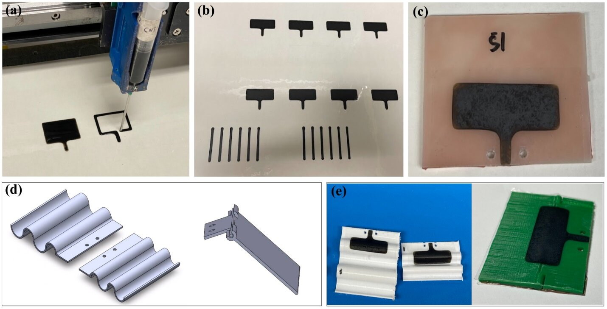
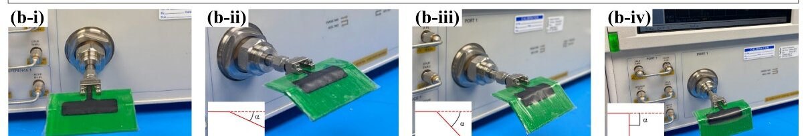

Project Details
Additively Manufactured Electronics
- Category: Research
- Affiliation: University of Maryland, College Park
- Sponsor: SMIEL Lab
- PI: Dr. Siddhartha Das, Prof. Abhijit Dasgupta, Margaret Samuels
- Collab: Beihan Zhao, Vishal S. Sivasankar, Xiao Lin, Prabhat Janamanchi
- Project date: Jan '22 - present
Printing electronic materials directly onto thin films and curved parts: here, carbon-nanotube humidity sensors, silver conductors and dielectric material has been printed.
Almost every circuit board in the world is made by taking a sheet of copper and etching away everything that isn't the circuit. Additive manufacturing works the other way round: it writes conductive, insulating or sensing ink only where it is needed, the way a pen writes on paper. That makes it possible to put sensors, antennas and wiring on thin flexible films, on curved parts and on surfaces no circuit board could follow, and to change a design without making new masks or tooling. My graduate work has used three families of printed material: metal-free carbon inks (carbon nanotubes with graphene oxide), silver inks for low-resistance wiring, and dielectric (insulating) inks that let one printed layer cross or climb over another.
~50 µmtotal thickness of the printed humidity sensor, film included
12–39 GHzworking band of a printed carbon-nanotube antenna on a flat board
<100 µmwidth and spacing of extrusion-printed silver lines
3families of printed material: carbon, silver and dielectric
How electronics get printed
Several direct-write methods are used to print electronics, each with its own ink requirements:
- Syringe (extrusion) printing pushes a paste or ink out of a fine nozzle, like icing from a piping bag. It handles thick, particle-rich inks.
- Aerosol jet printing turns the ink into a mist and focuses it into a narrow jet, writing lines tens of micrometres wide, even over steps and slopes.
- Inkjet printing fires individual droplets, like an office printer, and needs thin, carefully tuned inks.
Why ink flow matters. A printable ink has to do two contradictory things: flow easily while it is being squeezed through a nozzle, then stop flowing the instant it lands so the line keeps its shape. Inks that get runnier when pushed and thicker at rest, like ketchup, are called shear-thinning, and that is the behaviour printable inks are designed for. The fluid mechanics behind this is the subject of our review of carbon-nanotube inks.
Metal-free inks: carbon nanotubes and graphene oxide
Our group's CNT-GO ink mixes single-walled carbon nanotubes, which carry the current, with flakes of graphene oxide in water. It contains no metal and no polymer binder. The flat graphene oxide flakes keep the drying ink from piling up at its edges (the "coffee-ring" effect), so printed films come out even. The same ink has now been used for temperature sensors, humidity sensors and antennas, always printed onto a thin adhesive plastic film that can then be stuck onto flat, curved or flexible parts.
Printed humidity sensors that wrap around curves
Humidity sensors are everywhere, from weather stations to wearable health patches. Many existing designs are close to a millimetre thick, have resistances in the mega-ohm range, or take a long time to make. That makes them hard to fit into small or curved electronics. This study set out to print one that is thin, sensitive, easy to make and can be stuck onto almost any surface.
The ink
The ink combines two carbon nanomaterials suspended in water: single-walled carbon nanotubes (bundles 4–5 nm across and about 1 µm long), which carry the current, and graphene oxide flakes a few micrometres across. They were mixed in equal parts at 5 mg per mL and broken up by ultrasound. The ink is strongly shear-thinning: its viscosity falls about 400-fold, from about 4 to 0.01 Pa·s, as it is sheared harder, so it prints cleanly from a syringe.
Printing and mounting
Lines 5 cm long, about 1.5 mm wide and only 1–3 µm thick were printed on a Hyrel 3D printer fitted with a syringe head, onto 50 µm clear PET plastic film with an adhesive back. They dried at room temperature, and a dab of silver paste at each end made the electrical contacts. The finished sensor, film included, is only about 51–53 µm thick, among the thinnest humidity sensors that can be mounted on curved surfaces. The film was then peeled and stuck either flat or around tapered paper cups, giving four curvatures with radii of 3.5 to 4.25 cm.
How it senses humidity
The printed line's electrical resistance rises as the air gets more humid. Pure nanotube networks respond only weakly to humidity. Adding graphene oxide more than doubles the response, and the paper proposes why: graphene oxide flakes soak up water and swell, pushing the nanotubes apart so fewer of them touch, which makes it harder for current to flow.
Results
In an environmental chamber, humidity was stepped from 30% to 90% and back at six fixed temperatures between 35 and 60 °C, while 20 sensors were logged continuously.
- Strong, consistent response. On flat film, resistance changed by about 30% across the 30–90% humidity range. The sensitivity grew with humidity, reaching about 1.5% change in resistance per percentage point of humidity at the top of the range.
- Curves don't hurt it. On all four curvatures the response stayed in the same 20–30% range, with no clear trend with curvature or temperature, so the same sensor can be used on flat and curved parts.
- Easy to wire in. At 1–3 kΩ, the sensors draw little current and generate little heat, unlike many nanotube sensors in the mega-ohm range.
- Some lag between wetting and drying. Readings while humidity rose and fell differed slightly (hysteresis), more so when the sensor had sat in humid air for a long time between the two.
Does it last? These sensors also went through hundreds of hours at 90% humidity and about 2,200 temperature cycles between −40 and 125 °C. Those results are on the Reliability of Printed Electronics page.
Scope of the study
The absolute resistance varied noticeably from one printed line to the next, because the hand-mixed ink is not perfectly uniform. The paper therefore reports relative changes. Water condensing directly on a line caused huge resistance spikes; those readings were excluded. Better ink processing and post-treatment are suggested to make sensors more repeatable.
Printed antennas for tens of gigahertz
Phones, wearables, drones and aircraft need antennas that are small, light and able to sit on whatever surface is available. A patch antenna (a flat conducting rectangle above a ground layer) is the usual choice, but copper patches are normally tuned to one narrow frequency band. This study asked whether a printed carbon-nanotube patch could cover a much wider band, and keep working when stuck onto curved or bending surfaces.
Why try carbon instead of copper? At high frequencies, the current in a metal crowds into a thin layer at its surface (the skin effect), so a metal conductor behaves as if it were thinner and lossier the higher the frequency goes. Carbon nanotubes carry current along their length and are less affected by this, and they are light, flexible and do not corrode. Their drawback is a much lower conductivity than copper.
Making and mounting the antennas

Rectangular patches 10 mm by 30 mm were syringe-printed in three passes, giving a film about 10 µm thick; single-pass test lines were under 3 µm thick. Because the nanotube film conducts far less well than copper (about 3 × 103 S/m), the patch was made larger than a copper one would be to keep its surface resistance down. The films were stuck onto three kinds of 1.6 mm-thick base, each with a copper ground layer on the back: a flat FR4 circuit board, 3D-printed curved plastic (radii of 2.5 and 5 mm), and a 3D-printed hinged plastic plate that could be bent from 0° to 90°. A network analyser then measured how much of the signal fed into each antenna was reflected back, from a few gigahertz up to 40 GHz.
Reading an antenna's "S11". S11 is the fraction of the signal that bounces back from the antenna instead of going into it, in decibels. The usual working rule is that an antenna is usable wherever S11 is below −10 dB, meaning less than 10% of the power is reflected. The width of that frequency range is the antenna's bandwidth.
Results
- Very wide band on a flat board. The printed patch stayed below −10 dB from about 12 to 39 GHz, a fractional bandwidth of about 104%. The copper patch worked only from 18 to 20 GHz (about 10%).
- Still wideband on curves and bends. On curved plastic the band was about 7–22 GHz, and on the hinged plate about 5–25 GHz. Performance dropped somewhat at the sharpest bends (60° and 90°), which the paper attributes to strain in the film and the lower, more porous dielectric of 3D-printed plastic.
- The trade-off. Part of the reason the band is so wide is the same thing that makes the material lossy: resistance flattens the antenna's resonance. The measured radiation efficiency was about 15% near 18 GHz and the simulated peak gain about 1.3 dB, modest next to metal antennas. Raising the ink's conductivity is the main route to improving both.
- Survives temperature swings, not yet humidity. After about 60 cycles between −40 and 125 °C (one week), the antennas' bandwidth was essentially unchanged. A short exposure to 85% humidity at 60 °C did degrade them, likely because the water-based ink takes up moisture.

Metal-based conductive inks: fine-line silver
Carbon inks are good for sensing and for some antennas, but wiring that has to carry real current with little loss still needs metal. Silver is the standard choice for printed conductors. The challenge is to print silver lines that are both fine (narrow, closely spaced lines so a circuit fits into a small area) and highly conductive, using an ink that cures at a temperature the substrate and nearby components can survive. This part of my work was sponsored by NASA; the page describes the printing methods only.
Extrusion-printing dense silver lines
The ink is a commercial, very thick paste packed with silver nanoflakes that cures at a low temperature, gentle enough for plastics and nearby components. It was printed on a precision micro-dispensing printer onto PEEK, a tough, heat- and chemical-resistant engineering plastic used for circuit boards in demanding environments. Silver ink only partly wets PEEK, which makes clean, narrow lines harder to hold.
In extrusion printing, air pressure pushes the paste through a fine ceramic nozzle while the nozzle moves over the surface. Four settings decide the line: the air pressure, the print speed, the nozzle size and the gap between nozzle tip and surface. The behaviour follows from simple mass balance: the paste leaving the nozzle has to equal the paste laid down.
- Faster printing gives thinner lines, because the same flow is spread along more length, until the flow can no longer keep up and the line breaks into dots.
- Higher pressure gives wider lines, because it drives more paste through the nozzle.
- A smaller nozzle and a smaller gap reach the finest lines. For the densest patterns the nozzle had to ride only a few micrometres above the surface, a small fraction of a hair's width.
Mapping these settings gave a printing window in which the narrowest repeatable lines were about 60 µm wide at a spacing of about 100 µm. After curing, the lines reached a substantial fraction of the conductivity of solid silver, among the best combinations of line width and conductivity reported for extrusion printing. Curiously, the thinner lines were the more conductive ones, a result that will need microstructure studies to explain. Going finer still with a smaller nozzle was blocked by the flakes clogging it, which points to inks with smaller particles as the next step.
Keeping the nozzle on track over an uneven surface
A gap that small is smaller than the bumps on a "flat" plastic sheet. The surface measured here wandered by tens of micrometres, invisible to the eye but enough for the nozzle either to lift off (and break the line) or to crash into the surface. The printer's own surface-following produced broken lines and visible chatter from many tiny up-and-down moves.
The fix was a toolpath algorithm. A laser height sensor scans the surface along each line; the scan is smoothed and fitted with a spline; and the curvature along it is computed. Waypoints are then placed in proportion to the curvature, packed close together where the surface bends and spread out where it is flat, while capping how fast the nozzle may move up and down. Compared with evenly spaced linear or polynomial paths, this curvature-adaptive path kept the nozzle within its tolerance band much more of the time and cut the risk of striking the surface, which is what made repeatable sub-100 µm lines possible on real, slightly uneven parts.
Other circuitry: printed connections onto a chip capacitor
Real circuits mix printed lines with small off-the-shelf parts. Joining the two is a classic problem: a chip part stands up from the board like a tiny step, and a printed silver line has to climb that step to reach the contact on top without touching the side of the chip. In conventional electronics this is done with fine bonding wires. Here it was printed, using a test part called an MIS (metal–insulator–semiconductor) capacitor, a small square chip with its electrode on top, sitting in a gap in a printed signal line.
The connection was built in two printed layers. First, an insulating ink (NEA121) was printed as a sloped ramp against the edge of the chip, filling the step between the board and the chip top and covering the chip's side so the silver could not short to it. Second, a silver line was printed from the end of the signal line, up the ramp and onto the chip's top electrode. The finished parts were then tested with a network analyser up to 40 GHz to see how cleanly a high-frequency signal passes through the printed joint and the capacitor. This work is not yet published, so results are not shown here.
The same idea, a printed dielectric used as a bridge or ramp under a printed conductor, is what lets additive manufacturing build multilayer circuits: crossovers, connections onto components, and wiring that follows a part's shape in three dimensions.
Related work
- Nanoparticle Reviews: the fluid mechanics and colloidal science of printable carbon-nanotube inks.
- 3D Deposits from Drying Drops: how particles settle as an ink drop dries.
- Reliability of Printed Electronics: how printed sensors and circuits survive heat, cold and humidity.
My role
I am first author of the silver fine-line printing study, carried out with Prabhat Janamanchi, Prof. Abhijit Dasgupta and Prof. Siddhartha Das. I was a contributing author on the humidity sensor study (led by Beihan Zhao), the printed antenna study (led by Beihan Zhao and Rafsan Al Shafatul Islam Subad) and the printed capacitor work, all in Prof. Das's group at the University of Maryland with Prof. Dasgupta.
Read the papers:
B. Zhao, V. S. Sivasankar, S. K. Subudhi, A. Dasgupta and S. Das, “Printed carbon nanotube-based humidity sensors deployable on surfaces of widely varying curvatures,” ACS Applied Nano Materials 6, 1459–1474 (2023). doi:10.1021/acsanm.2c05423
B. Zhao, R. A. S. I. Subad, H. Abusalma, S. Subudhi, C. Riso, A. Dasgupta and S. Das, “Fabrication, characterization, and reliability analysis of 3D printed high frequency, wideband, and flexible carbon-nanotube and graphene-oxide based rectangular patch antennas deployable on curvilinear and deformable surfaces,” Frontiers in Antennas and Propagation 4 (2026), open access under CC BY 4.0. doi:10.3389/fanpr.2026.1884827
S. K. Subudhi, P. Janamanchi, A. Dasgupta, M. H. Samuels and S. Das, “Extrusion-printed high-density conductive silver traces on PEEK substrate,” manuscript in review.
Photographs from the antenna paper are reproduced under its CC BY 4.0 licence. All other figures on this page are simplified schematics drawn for this site.
Outcomes:
- Paper published in journal ACS Applied Nano Materials on Jan 16, 2023.
Printed carbon nanotube-based humidity sensors deployable on surfaces of widely varying curvatures
ACS Appl. Nano Mater. 2023, 6, 2, 1459–1474
DOI: 10.1021/acsanm.2c05423 - Paper accepted in journal Frontiers in Antennas and Propagation.
Fabrication, Characterization, and Reliability Analysis of 3D Printed High Frequency, Wideband, and Flexible Carbon-Nanotube and Graphene-Oxide Based Rectangular Patch Antennas Deployable on Curvilinear and Deformable Surfaces
Front. Antennas Propag. 2026, 4 (Wearable Antennas)
DOI: 10.3389/fanpr.2026.1884827 - Paper in review with journal.
Extrusion-Printed High-Density Conductive Silver Traces on PEEK Substrate